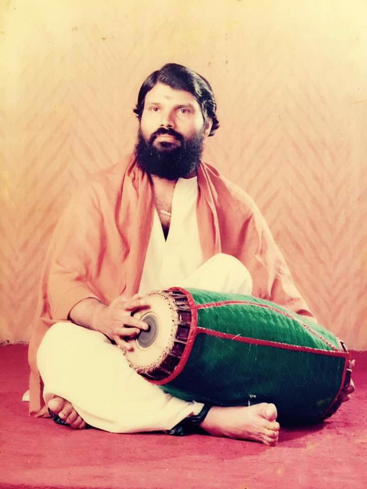
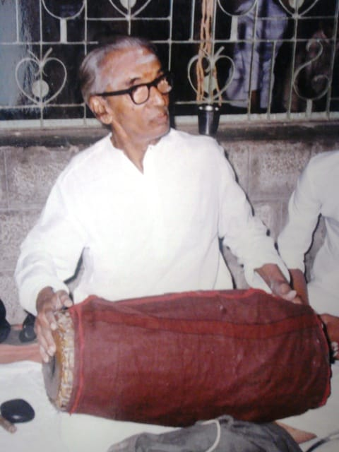
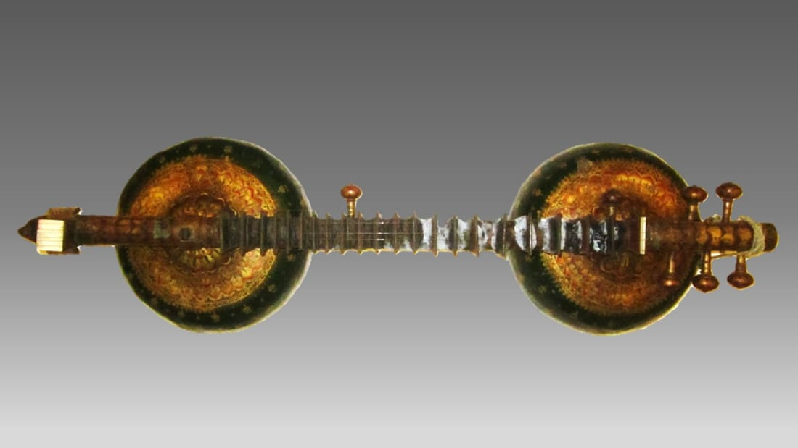
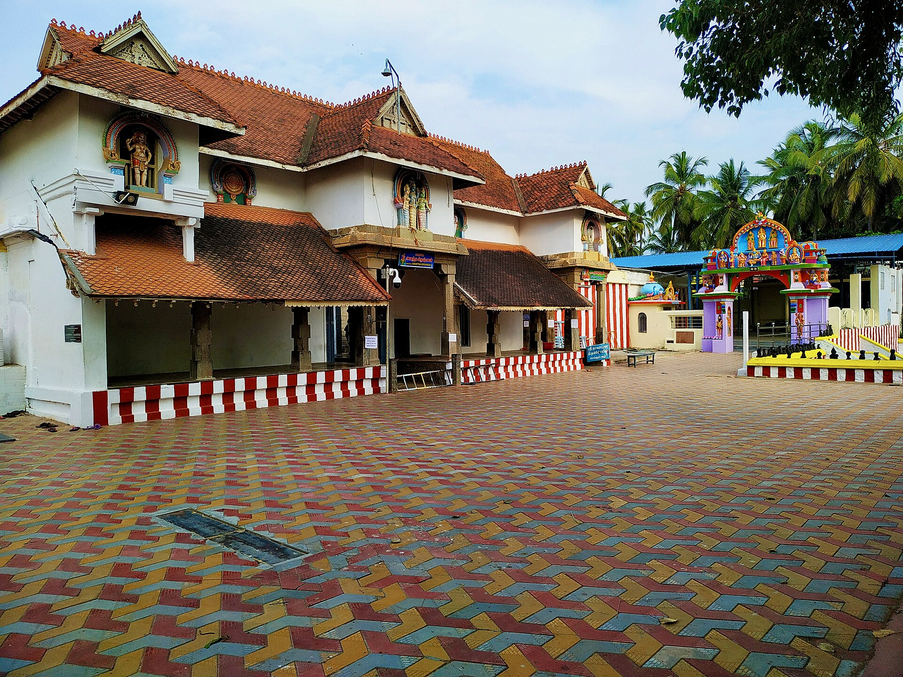
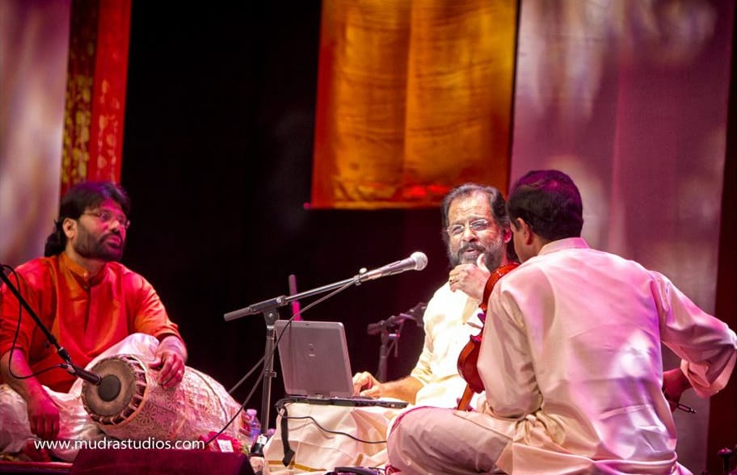

A Carnatic academy built around listening.
NadaVeena teaches Carnatic vocal and veena in the guru–shishya spirit: patient, personal and rooted in the tradition.




Music learned slowly, and learned well.
NadaVeena is a Carnatic vocal and veena academy in Chennai, the city where this music is heard in every season. We began from a simple belief: a student who learns to listen properly will play and sing properly.
That belief shapes the academy. Batches are small, correction is personal, and every student is taught to hear the pitch before producing it. We would rather build a sound foundation than rush a repertoire.
The academy welcomes children and adults, complete beginners and returning learners, in two disciplines that share one tradition: Carnatic vocal and the veena.
A community where Carnatic music is learned with understanding and carried forward with care.
We want every student to leave a lesson hearing more than when they arrived.
Teach the tradition faithfully
Graded lessons in vocal and veena that respect how this music has always been passed on.
Teach every student personally
Small batches and individual correction, at the student's own pace.
Make music part of daily life
Practice routines that fit a school day or a working week.
Give students a stage
Recitals where progress is shared with family and fellow learners.
Shruti, Laya and Bhava
Three ideas run through every lesson, from the first swara to the last kriti.
- Shruti
- The tonal centre. Students learn to find it, hold it and hear when they have drifted from it. Everything else rests here.
- Laya
- The steady pulse beneath the music. Tala is practised with the hands, so that rhythm becomes a habit of the body rather than a calculation.
- Bhava
- The feeling a raga carries. Once pitch and rhythm are secure, students learn to shape a phrase so that it says something.

Hear it, sing it, then play it.
Carnatic music is learned by ear first. A teacher presents a phrase, the student repeats it, and only then is it written down or played on an instrument.
- Listen closely. Phrases are heard many times before they are attempted.
- Repeat with correction. The teacher fixes pitch and gamaka while the sound is fresh.
- Practise in small pieces. A short, specific task is set for each week.
- Revisit the basics. Sarali varisai and alankaras stay part of practice at every level.
A calm room, and a respectful one.
Traditional values are part of the lesson, not an extra.
Respect for the guru
Lessons begin and end with courtesy. Students learn to receive correction gladly.
Patience
Good sound takes time. We never hurry a student past a foundation that is not yet steady.
Discipline with warmth
A regular practice routine, kept in a friendly and encouraging room.
Care for the instrument
Students learn to tune, handle and look after their instrument.
From the first swara to the stage
Every student moves at their own pace. This is the path most follow.
Begin
A trial class, a conversation, and a first sense of shruti.
Foundations
Sarali varisai, alankaras and, for the veena, posture and plucking.
Repertoire
Geethams and varnams that teach raga and tala together.
Expression
Kritis, gamakas and the first steps into improvisation.
Performance
Recitals to share progress, at a pace that suits the student.
Come and listen first.
See what we teach, then tell us where you would like to begin.